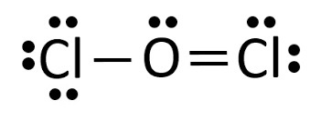
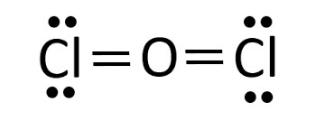
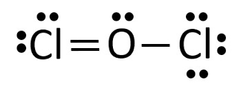
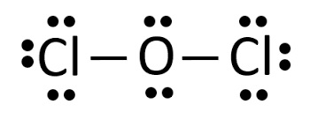

Press Ctrl-Z to toggle the answers.
Take Home Quiz Ch 5
name: ______________________________________
1) What is the molecular shape of CHO?
A) Linear
B) bent*
C) Trigonal planar
D) Tetrahedral
2) What is the molecular shape of XeF4?
A) Octahedral
B) Square pyramidal
C) See saw (saw horse)
D) Square planar*
3) Place the following bonds in order of increasing dipole moment.
Si-P Si-Cl Si-S
A) Si-P < Si-S < Si-Cl*
B) Si-Cl < Si-P < Si-S
C) Si-Cl < Si-S < Si-P
D) Si-P < Si-Cl < Si-S
4) Which molecule has the smallest dipole moment in the gas phase?
A) HCl
B) Cl2*
C) CO
D) LiF
5) What is the VSEPR shape (electron domain geometry) of CH4?
A) Trigonal planar
B) Linear
C) Tetrahedral*
D) Bent
6) Which of the following shows the best Lewis structure for XeF2?
A)

B)
 *
*C)

D)

7) Which of the following bonds is least polar?
A) H-I*
B) H-F
C) HCl
D) HBr
8) Is H2O polar or nonpolar?
A) Nonpolar
B) Polar*
9) Which of the following elements is polar?
A) SO2
B) SF6
C) BH3
D) H2O*
10) Which of the following elements is nonpolar?
A) PH2F
B) SiS2*
C) NHO
D) IF5
11) What is the molecular shape of PF5?
A) Trigonal bipyramidal*
B) See saw (saw horse)
C) Bent
D) Octahedral
12) Which of the following elements is the most electronegative.
A) Magnesium
B) Sodium
C) Sodium
D) Chlorine*
13) What is the VSEPR shape (electron domain geometry) of SF6?
A) Tetrahedral
B) Trigonal planar
C) Octahedral*
D) Trigonal bipyramidal
14) Which of the following shows the best Lewis structure for OCl2?
A) 
B) 
C) 
D) *
15) Identify the weakest bond.
A) Triple covalent bond
B) Double covalent bond
C) All bonds are the same strength
D) Single covalent bond*
16) What is the VSEPR shape (electron domain geometry) of CO2?
A) Trigonal planar
B) Tetrahedral
C) Bent
D) Linear*
17) Is AsF5 polar or nonpolar?
A) Nonpolar*
B) Polar
18) What is the VSEPR shape (electron domain geometry) of BH3?
A) Linear
B) Trigonal planar*
C) Tetrahedral
D) Bent
19) What is the molecular shape of SF6?
A) Octahedral*
B) Trigonal bipyramidal
C) Trigonal planar
D) Tetrahedral
20) What is the molecular shape of CF4?
A) bent
B) Trigonal planar
C) Linear
D) Tetrahedral*